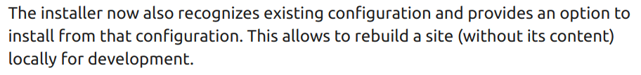
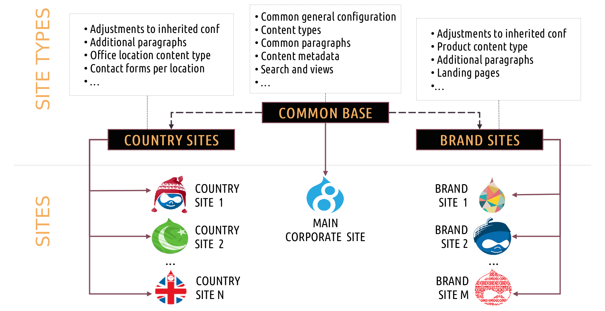
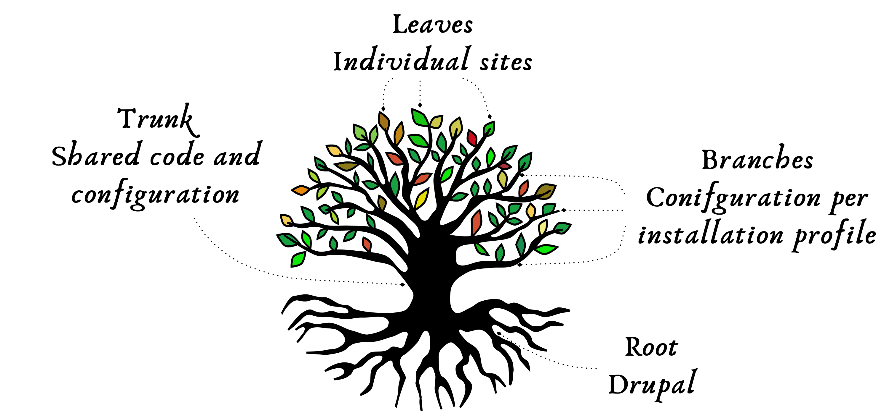
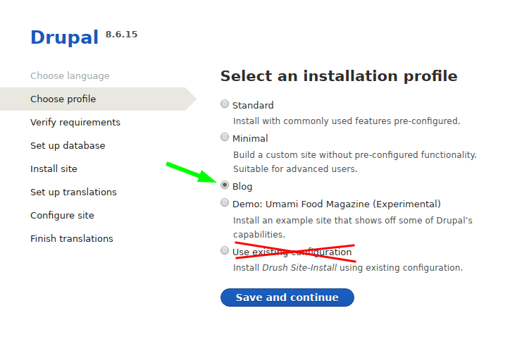
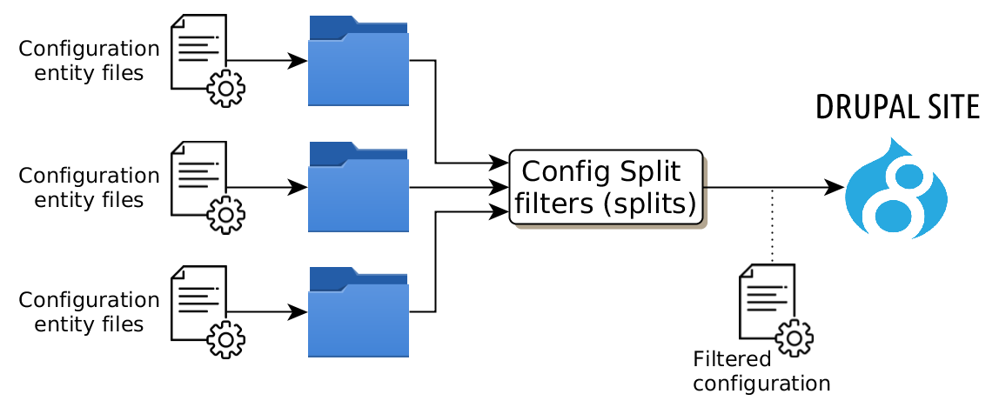
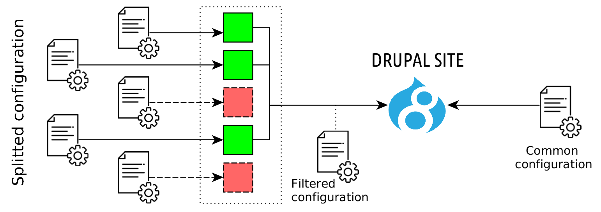

Sharing configuration in multi-site and multi-profile platforms: A Modern Odyssey
David López / @akalam
Ricardo Sanz / @sanzante
Ricardo Sanz / @sanzante
#DrupalDevDays
David López
Backend developer
drupal.org/u/akalam
Playing with Drupal since
2008
Ricardo Sanz
Drupal developer & DevOps
drupal.org/u/tunic
Playing with Drupal since
2008
Starting point
Drupal 8.6
- It allows to install a site from an existent configuration.
- This is not a default configuration but a site configuration that's applied when a cim is done.
- Initially for development purposes: 
- 1613424 - [META] Allow a site to be installed from existing configuration
How to
- Place configuration in configuration directory
path.
You can set your own directory if you want:$config_directories[CONFIG_SYNC_DIRECTORY] = '/path/to/configuration'; - Install:
- Web interface: Drupal standard installation page.
- Drush 9.4: --existing-config param.
drush site-install --existing-config -y
Demo!
Limitations
- Profile can't use hook_install*
- Only applicable for one site (or exact clones, because configuration is the same).
Use
- Set up a site in certain environments (local, CI).
- It doesn't include content (advantage or drawback?).
- Allows to create installation profiles easily.
Let's extend it!
Family of sites
What if we …?
- …use installation profiles to get types of sites easily installed from an existent configuration?
- …use mechanisms to customize each site's configuration?
- …try to reuse configuration in a family of sites?
Examples
- Group of corporate websites.
- Family of similar but different media publishing websites.
- SaaS website for building specific types of websites.
- World wide organization with sites per country, region and/or events.
- …
Corporation
What and how from a Drupal perspective
What
What
- Set of installation profiles sharing a common conf.
- Installation profiles can customize the conf.
- Use inheritance to create a hierarchy of installation profiles.
- Sites can customize their configuration as well.
- Ability to enable a module that provides a complete functionality to site (Features style).
- In one line: we reuse code, let's reuse configuration.
How
- Sites are installed from installation profiles and get its config from the existent configuration.
- The existent configuration (yml files) is shared by installation profiles.
- Use installation profile inheritance to extend parent profiles.
- Config Filter, Config Split and Configuration Override System to customize sites's configuration based on different conditions.
Hands-on!
What we need
- Automatically apply existent configuration on install profile installation.
- Install profile inheritance.
- Installation profiles that share a common configuration.
- Enable custom site's configuration on certain conditions.
1.- Installation profiles using existent configuration
What is?
- What Drupal 8.6 does, but just selecting an installation profile.
- Site is installed using existent configuration.
- First implemented in Config installer installation profile.
How to

How to
- existing-config parameter needs to be automatically enabled.
- Enabled from installation profile code.
- Implement hook_install_tasks_alter() on MY_PROFILE.profile.
How to
/* Implements hook_install_tasks_alter(). */
function MY_PROF_install_tasks_alter(&$tasks, $install_state) {
_MY_PROFILE_install_tasks_alter($tasks, $install_state);
}
function _MY_PROFILE_install_tasks_alter(&$tasks, $install_state) {
// Use the Drupal 8.6 way of importing from existing conf.
if (!$install_state['parameters']['existing_config']) {
// @codingStandardsIgnoreLine
global $install_state;
$install_state['parameters']['existing_config'] = TRUE;
}
}
Tested on 8.6 and 8.7.
2.- Installation profile inheritance
What is?
- An installation profile is a Drupal extension (like any module) defined by a .info.yml file.
- Using inheritance we can define an installation profile hierarchy.
- An installation profile also installs the ascending profiles in the hierarchy.
- Can implement code or configuration that is available to their descendants.
How to
How it works?
parent_profile.info.yml
name: 'Parent Profile'
type: profile
core: 8.x
install:
- module_a
- module_b
themes:
- my_theme
my_profile.info.yml
name: 'My Profile'
type: profile
core: 8.x
'base profile': parent_profile
install:
- module_c
- module_d
exclude:
- module_b
3.- Installation profiles sharing a common configuration
What is?
- Having different installation profiles that install/import configuration from same source.
- A site can be installed from any available installation profile and existent configuration will be applied.
Problem
core.extension.yml includes sites's
installation profile:
...
views_ui: 0
menu_link_content: 1
views: 10
my_profile: 1000
profile: my_profile
Problem: Profile in core.extensions
- Installation profile in core.extension can't be altered or overwritten by Config Split.
- If all sites share the same configuration, all sites should have the same installation profile.
How to solve
- core.extension is a configuration entity.
- Remove installation profile from core.extension.yml (shared file by all profiles/sites).
- Inject installation profile name in core.extension configuration entity on each site when needed.
- When exporting configuration, strip out installation profile name.
Remove installed installation profile from core.extensions.yml
...
views_ui: 0
menu_link_content: 1
views: 10
my_profile: 1000
profile: my_profile
During site installation
- Drupal triggers a validation error during installation checks because core.extensions.yml lacks an installation profile.
- Drupal needs the installation profile name during installation.
During site installation: validation
During site install: actual installation
Inject installation profile during installation from the
installation profile code itself
(hook_install_tasks_alter())
// The installation profile has been removed from core.extension.yml
// but this config is required for a complete installation.
if ($install_state['active_task'] == 'install_config_import_batch'){
$profile = $install_state['parameters']['profile'];
\Drupal::configFactory()->getEditable('core.extension')
->set('profile', $profile)
->save();
}
During site life: export/import config
- When exporting configuration (cex) Drupal would write the site's installation profile into core.extensions.yml.
- When importing configuration (cim) Drupal would trigger an error becuase there's no installation profile in core.extensions.yml.
During site life: export/import config
Implement a ConfigFilter pluging to inject/remove
installation profile during configuration import/export.
/**
* Excludes installation profile from to core.extension.yml.
*
* @ConfigFilter(
* id = "MY_PROFILE_exclude_profile",
* label = "Allows to exclude the profile from core.extension.yml",
* storages = {"config.storage.sync"},
* weight = 10
* )
*/
class ExcludeProfile extends ConfigFilterBase
implements ContainerFactoryPluginInterface {
...
During site life: export/import config
Method to filter out installation profile from
core.extensions.yml when exporting
configuration.
/**
* {@inheritdoc}
*/
public function filterWrite($name, array $data) {
if ($name == 'core.extension' && isset($data['profile'])) {
unset($data['profile']);
}
return parent::filterWrite($name, $data);
}
During site life: export/import config
Method to inject installation profile to
core.extensions.yml when importing
configuration.
/**
* {@inheritdoc}
*/
public function filterRead($name, $data) {
if ($name == 'core.extension') {
$data['profile'] = $this->profile;
}
return parent::filterRead($name, $data);
}
4.- Enable config under certain conditions on sites
What is?
- Allow to customize shared configuration (or apply certain config entities from files) based on different conditions.
- We can have specific configurations for:
- Installation profile.
- Environments.
- Site.
- Functionality.
- …
How to
Using the power of Config Split.

Config splits
- Config splits represent a certain package of functionality (per site, per environment, per module, etc).
- Config splits are initially disabled.
- Config splits are enabled when conditions are meet (current site, current environment, site's profile, installed module, etc).
- When config is imported, enabled splits "alter" the read configuration.
Config splits

Two cases: non-Drupal condition
- Key: Drupal "bootstrap" is not needed to check condition.
- Config splits are activated by simple conditions.
- Common way to enable splits.
- Example: using a settings.local.php to enable by environment.
- Example: using simple code that checks available data, like request's domain.
Two cases: Drupal condition
- Key: Drupal "bootstrap" needed to check condition.
- If Drupal is not "bootstrapped" (like in setting.php) is too soon to run Drupal services.
- Services are needed for enabling a config split if a module is installed (Features style).
- Relying on global variables is a bad practice.
- Solution: Enable the config splits with a configuration override service!
Configuration override service: how to
- Create a service that implements
ConfigFactoryOverrideInterface.
class ConfigOverrides implements ConfigFactoryOverrideInterface { - And tell Drupal to use it!
services: blog.overrider: class: Drupal\blog\ConfigOverrides arguments: - '%container.modules%' - '%install_profile%' tags: - {name: config.factory.override}
Configuration override service: how to
- The service hooks into configuration management and enable the config splits.
- Because it's a service it has all the info available (see params).
- More details in the session's example repository: https://bitbucket.org/david_akalam/metadrop-ddd_2019_examples/src/dev/
Demo 2a A!
Demo 2B!
Recap
Recap
Benefits
- Configuration reuse in a multisite multiprofile environment.
- Customized configuration based on almost any condition.
- Build and envolve family of sites easily (or not die trying!).
- Factories of sites.
- Drastic cost reduction in the medium to long term for large families of sites.
Limitations
- Sites configuration must be related.
- Installation profiles must be in same hierachy.
- Complex to design the splits structure and distribute configuration among them.
- Sites configuration can't be too customized.
- High initial cost.
Final notes
- This is a platform of related sites.
- You don't need multisite for this.
- You could use just an installation profile.
- Therefore, you don't need installation profile inheritance.
- This is not likely to be in core. Core should stay simple and cover many cases but no all.
CMI 2.0
- See Roadmap for CMI 2.
- Work in progress! Help is much appreciated!
- Three focus: improve docs, enviroment specific configuration and cross configuration workflows.
- Config Transform import/export events that allow subscribers to modify config.
- Experimental Configuration Environment to change environment from command or UI.
Questions?
What did you think?
Locate this session at the Drupal Developer Days
Transylvania 2019 website:
https://cluj2019.drupaldays.org/schedule
Take the survey!
https://www.surveymonkey.com/r/drupaltransylvania
https://cluj2019.drupaldays.org/schedule
Take the survey!
https://www.surveymonkey.com/r/drupaltransylvania